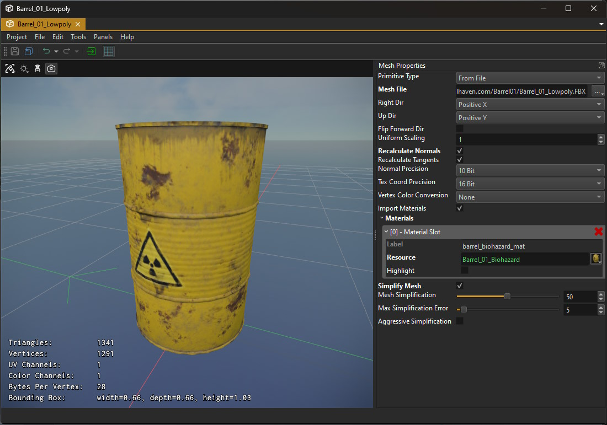

Mesh Asset
A mesh asset represents a mesh that can be used for rendering. In the most common case the mesh asset imports the mesh data from an external file, such as an FBX file. However, it also supports generating the mesh data for common shapes (spheres, cylinders, ...) procedurally. Mesh assets are typically added to a scene with a mesh component.

The left hand side of the asset document shows a 3D preview of the mesh. The viewport allows to switch the render mode to inspect the mesh normals, UV coordinates and so on.
On the right hand side the asset properties specify how to import or generate the mesh data.
Important:
The mesh asset does not automatically update when you edit its properties. Instead you need to transform the asset (
Ctrl+Eor with the green arrow button in the toolbar).
Video: How to import meshes

Mesh Orientation
In ezEngine it is the convention that meshes should point into the +X direction. Every component (such as AI) assumes that moving along the +X axis will move the mesh forward, moving along +Y moves it to the right and moving along +Z moves it upwards. It is therefore best to import all meshes this way right away.
The mesh preview shows this direction with a red arrow on the ground. Also the camera of the preview and the thumbnails looks onto this side of the meshes.
Since assets are often authered with many different conventions, you can adjust the orientation during mesh import. The ImportTransform option gives you a quick way to select from common conventions. The asset must be re-transformed to see the effect of the option. If none of the presets yield the desired result, use the Custom option and then configure each axis individually.
Asset Properties
PrimitiveType: This selects how the mesh data is generated. IfFrom Fileis chosen, you need to also specify theMeshFileproperty. If you choose a procedural method, other configuration options appear.MeshIncludeTags,MeshExcludeTags: Some source assets pack different types of meshes into a single file, for example different LODs or a dedicated collider mesh. These options allow you to select which meshes to import. Both are semicolon-separated lists of strings. Ie A;B represents two tags,AandB.If any include tag is specified, only meshes whose names start or end with that string are used. For instance, the include tag
LOD1means that a mesh named Bunny_LOD1 would be imported, but a mesh named Bunny would be skipped.If any exclude tag is specified, meshes whose names start or end* with that string are skipped. However, include tags take precedence.
ImportTransform,RightDir,UpDir,FlipForwardDir: How to rotate or mirror the mesh during import, so that it is oriented correctly for use in ezEngine. See Mesh Orientation above.UniformScaling: Adjusts the size of the mesh, for example to convert a mesh from centimeter to meter scale.RecalculateNormals,RecalculateTangents: If enabled, information about normals or tangents in the mesh file is ignored, and is instead computed from the vertex data.NormalPrecision,TexCoordPrecision: These options allow you to choose how precise normals and UV coordinates are represented. Leave these at the default, unless you notice precision issues. Higher precision means the mesh takes up more RAM on the GPU and is slightly slower to render.VertexColorConversion: How to convert the vertex colors during import:None: The color values are taken as-is.Linear To sRGB: The values are considered to be in linear space, and converted to Gamma space.sRGB To Linear: The values are considered to be in Gamme space, and converted to linear space.
Which value to use depends on what the vertex color represents. Blender treats all vertex colors as sRGB but the behavior differs depending on which file format you export to. E.g. for FBX the colors are passed through as is but for GLTF the colors are converted to linear. It now depends on what the shader wants to do with the vertex colors: If used as a color multiplier, treating them as sRGB and converting to linear is correct, so the FBX file would be wrong when imported into EZ. If used as blend weights or other custom data, the sRGB to linear that GLTF does is wrong.
ImportMaterials: If enabled, the mesh import automatically generates material assets for the materials that the mesh file specifies. It also tries to populate those materials with sensible values and if possible also creates texture assets. Unfortunately this rarely works perfectly, and typically requires you to fix the generated assets afterwards.Note:
Materials are only generated when the mesh has no materials set yet. After the initial creation of these other assets, you usually need to transform the mesh a second time to make them properly show up.
Materials: The list of materials to use. The mesh may have multiple sub-meshes, and each sub-mesh uses a different material slot. Mesh components can override which material is used for which slot.Simplify Mesh: If enabled, the number of vertices and triangles in the mesh is attempted to be decimated. Note that this is done for exactly this one mesh asset. If you want to have multiple levels-of-detail for a mesh, you need to create several mesh assets that reference the same input mesh and use different simplification settings on each. How well simplification works is highly dependent on the original mesh. You need to play around with the various options to see which ones give the best result. If you build multiple levels-of-detail of a mesh, make sure that each level at least cuts the amount of triangles down to 50% or better 25%, compared to the previous level.Mesh Simplification: How strongly to attempt to simplify the mesh.Max Simplification Error: How much the mesh may change during simplification. A higher error theshold may allow for stronger simplification.Aggressive Simplification: If enabled, the mesh simplification may throw away even more quality to reach the maximum simplification.
Procedural Mesh Generation
Through the PrimitiveType option you can choose to create a mesh procedurally. In this case object specific options appear. Note that by default objects use a detail level of 0 which means that the editor will pick a decent value, depending on the chosen primitive type.
Be aware that some detail values seemingly have no effect. For instance, for cones, capsules and cylinders the detail represents the number of subdivisions along the circumference, and therefore can't be lower than 3. Therefore the values 1, 2 and 3 all produce the same result.